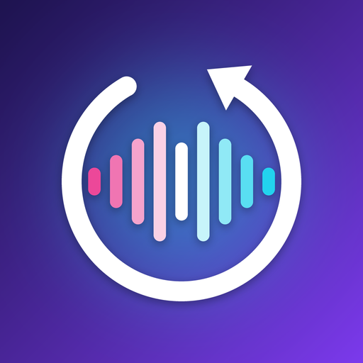

ReverseLab
Português
Grave sua voz ou importe um áudio e ouça tudo de trás para frente. Inverta o áudio inteiro, por pedaços ou em ida e volta, e combine efeitos como robô, esquilo, caverna e fantasma. Tudo processado no seu aparelho, sem cadastro.
English
Record your voice or import any audio and hear it backwards. Reverse the whole clip, in slices or ping-pong, and stack effects like robot, chipmunk, cave and ghost. Everything is processed on your device — no account needed.